çàà
L'histoire du Québec de -40 000 avant J-C jusqu'à aujourd'hui
Introduction
Vous ne vous êtes jamais demandé pourquoi on parle français au Québec
Il s’agit techniquement du seul endroit de toute l'Amérique où cette
langue est utilisée. Si vous voulez savoir pourquoi, il suffit juste de
se pencher sur l’histoire extrêmement riche de la province. Depuis la
“découverte” du territoire par Jacques Cartier en 1534, la communauté
française n’a jamais cessé d’évoluer et de se battre pour protéger sa
langue, sa culture et sa religion contre les populations anglophones. Et
c’est justement ce dont je veux parler sur ce site, l’histoire folle de
la province du Québec et de sa population. Mais avant de commencer,
parlons brièvement des premières nations qui ont vécu pendant plusieurs
siècles sur le continent.
Carte de l'évolution territoriale du Québec
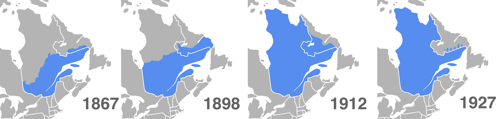
Les premières nations
Les populations autochtones auraient occupé le territoire de l’Amérique du Nord pendant plusieurs milliers d’années. Cela expliquerait le fait qu’il soit super bien adapté au climat du continent. Mais comment sont-ils arrivés là ? La théorie la plus plausible et la plus acceptée serait que des populations asiatiques auraient emprunté un pont naturel nommé le détroit de Béring qui relie une partie de l’Asie à l’Alaska. Ce détroit serait apparu lors de l’abaissement du niveau de la mer, qui est une conséquence de la formation des glaciers continentaux. Beaucoup d’échanges d’animaux et de plantes auraient été faits entre les deux continents grâce à ce détroit et beaucoup de scientifiques pensent que la Béringie aura joué un rôle important lors de l’évolution de plusieurs espèces.
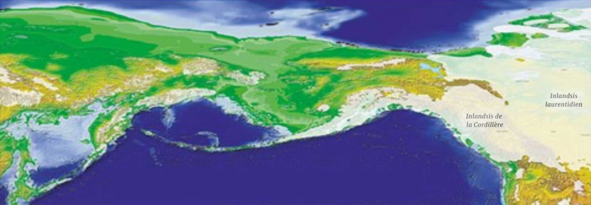
Pendant ces plusieurs milliers d’années, les Autochtones auront développé un mode de vie très différent des Européens de cette époque. Déjà beaucoup d’entre eux sont nomades et chasseurs cueilleurs. Ils vivent en petite communauté et les chefs ne seront pas choisis selon leur statut social, mais plutôt pour leur capacité (dans la chasse) ou leur talent d’orateur. D’autres sont sédentaires comme les Iroquoiens : en plus de la chasse, ils feront pousser plusieurs plantes comme le maïs. Les relations entre les différents groupes seront très variées, il y avait des échanges entre les différentes nations, ce qui permettait à tout le monde, même aux Inuits, d’avoir accès à des ressources qu’on retrouve un peu partout sur le continent. Il y aura aussi des guerres entre les différentes nations, mais celles-ci ne seront pas aussi violentes que les guerres européennes. Il y aura peu de morts car on préférait faire des prisonniers de guerre plutôt que de tuer. Le but de cette pratique est de remplacer d’anciens membres morts de la tribu, ce qui veut dire que, malgré le fait que ces prisonniers sont techniquement des ennemis, les Autochtones les traiteront comme des membres de leur tribu. Ce qui est très différent des guerres sanglantes qu’o peut retrouver en Europe.
Mais l’aspect qui différencie le plus les Autochtones des Européens, c’est leur relation avec la nature. Déjà, les Autochtones pratiquent la vie de subsistance, ce qui veut dire qu’ils ne cherchent que le nécessaire. Lorsqu’ils chassent, ils s’arrêteront une fois qu’ils ont assez de viande pour nourrir tout le monde. Leur objectif sera de survivre tout en respectant la nature, pas de gagner le plus de richesse possible. La raison : les nations pensent que chaque élément de la nature (plante, animal, fruit, etc) possède un esprit et qu’il faut le respecter. La spiritualité autochtone et très complexe, beaucoup de légendes et de mythes seront partagés oralement de génération en génération. Chaque tribu possédera un guide spirituel qui communiquera avec les esprits.
Vers le début du 16e siècle, beaucoup de pêcheurs partiront pêcher au Nouveau Monde. En effet, l’explorateur italien Jean Cabot affirmera qu’il y a beaucoup de poissons dans la région de Terre-Neuve, ce qui poussera plusieurs personnes à aller pêcher là-bas. C’est durant ces voyages que les Européens feront du troc avec les premières nations. Ils échangeront des outils en métal contre de la viande ou de la peau de castor. Malheureusement, beaucoup d’autochtones décèderont à cause des maladies européennes, ils n’ont pas les anticorps pour se défendre contre ces maladies. Malgré ça, les relations resteront bonnes et cela permettra la création d’une colonie comptoir (colonie qui a pour unique but de fournir des ressources à la métropole). Mais surtout, les autochtones partageront beaucoup de techniques afin de survivre à l’hiver, ce qui permettra l’installation des Européens plus tard.

Arrivée de Jacques Cartier et première tentative de colonisation
C’est vers 1600 que le roi de France, François 1er, décidera de s’intéresser à l’Amérique du Nord. C’est dans ce contexte que Jacques Cartier partira pour le Nouveau Monde dans le but de préparer le territoire pour une future installation. Lors de son premier voyage en 1534, il sera accompagné par 60 marins et ils seront les premiers à explorer le fleuve Saint-Laurent. C’est durant ce voyage qu’ils installeront la fameuse croix à Gaspé, mais ce que beaucoup de gens ne savent pas, c’est que les Iroquoiens protesteront contre l’installation de la croix, mais Jacques Cartier leur dira qu’il ne s’agit que d’un simple repère pour faciliter la navigation. Après ça, 2 autres voyages seront organisés par le roi de France. Le deuxième voyage sera une catastrophe : les Européens n'écouteront pas les conseils des Autochtones et ils kidnapperont même 10 Iroquoiens, dont le chef de la tribu : Donnacona. Durant le troisième voyage, Cartier essayera d’installer la première colonie dans le Nouveau Monde, mais entre la difficulté liée à l’hiver, mais aussi les autochtones qui attaqueront le fort pour se venger des 10 membres de leur tribu que les Européens auront kidnappés, Jacques Cartier et ses hommes retourneront en France et la tentative sera un échec total. Il faudra attendre presque 50 ans pour revoir des tentatives de colonisation qui seront toutes un échec. (Image : Recontre de Jacques Cartier avec Donnacona)
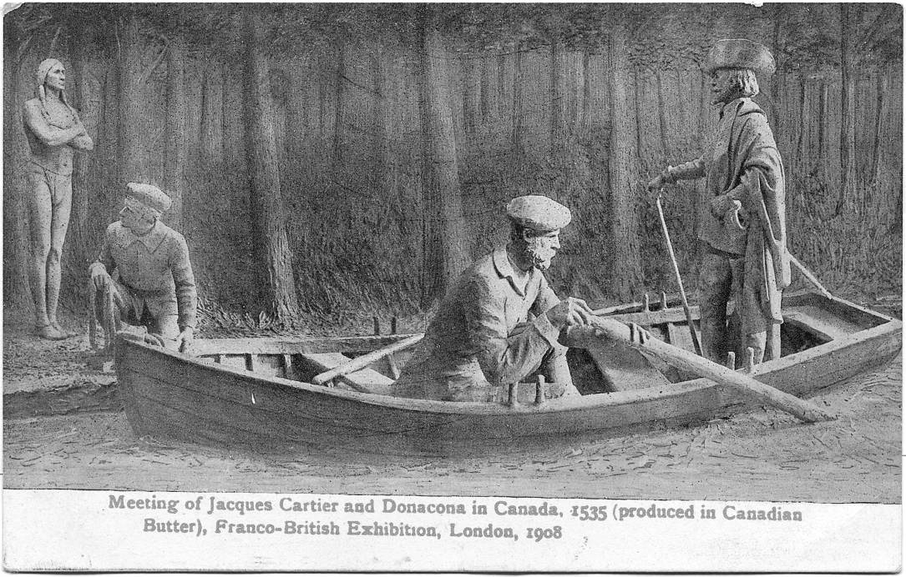
Samuel de Champlain et Québec
En 1608, un homme retentera de créer une colonie en Amérique du Nord. Cet homme, c’est Samuel de Champlainet, avant Québec, il aura déjà essayé avec une colonie nommée Port-Royal qui sera un échec, car trop coûteuse. C’est dans l’optique de fonder la colonie ultime que Samuel de Champlain trouvera un territoire très prometteur : Québec. Le terrain est facile à protéger et est surtout proche d’un réseau d’échange maritime, ce qui favorisera l’aspect commercial de la colonie. Malgré le froid, le scorbut, les nombreux morts et même une tentative d’assassinat, Québec naîtra en 1608 et Samuel de Champlain mourra le jour de Noël 1636. En 1642, Jeanne Mance et Paul Chomedey de Maisonneuve fonderont Montréal et pendant les 100 prochaines années, la colonie sera très prospère. Grâce à certaines politiques de la France, comme les filles du roi, qui encourageront beaucoup de colons à aller s’installer en Nouvelle-France. Mais aussi grâce à la peau de castor qui stimulera l’économie de la colonie. Malheureusement, cette belle époque ne sera pas de longue durée…
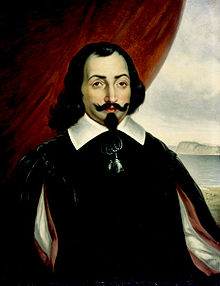
La guerre de Sept ans
Vers le milieu du 18ᵉ siècle, une guerre qui oppose la France et la Grande-Bretagne (en plus de leurs alliés) fait ravage en Europe. Pour soutenir leur métropole, les colonies de ces pays se feront aussi la guerre, c’est le cas de la Nouvelle-France et des treize colonies. Au début, les batailles seront très serrée, mais après un certain temps, des alliés britanniques viendront aider la colonie, alors que la France décidera d’abandonner la Nouvelle-France pour se concentrer sur la métropole. Grâce à cette décision, les Britanniques pourront prendre plusieurs forts français et réussiront à remonter le fleuve Saint-Laurent et à atteindre Québec. Une armée britannique qui sera dirigée par le général James Wolfe passera par l'anse au Foulon, un territoire qui ne sera pas très gardé. Ce qui permettra aux Britanniques de mener une attaque surprise qui leur permettra de gagner une bataille décisive : la bataille des Plaines d'Abraham. Après celle-ci, les Anglais assiègeront Québec qui capitulera quelques jours plus tard. Quelques mois après, les Anglais tenteront d’assiéger Montréal, mais le gouverneur général capitulera avant même que le siège commence, car il savait qu’ils n’avaient aucune chance contre l’armée britannique. Il y a plusieurs éléments qui peuvent expliquer la défaite de la Nouvelle-France, déjà le fait que la métropole ne les a pas aidés est une raison majeure. Mais les mauvaises décisions et le nombre ahurissant de soldats qui n’ avaient aucune expérience ont aussi contribué à cette défaite. En 1763, le traité de Paris sera signé, ce qui mettra fin à la guerre de Sept ans, et la France préfèrera récupérer les Antilles au détriment des colonies en Amérique du Nord, car celles-ci sont beaucoup plus rentables.
Grâce aux négociations de la France, les habitants des colonies auront 18 mois pour quitter la colonie et retourner en Europe. Pourtant, peu de citoyens partiront, car les gens se considèreront plus Canadiens français que Français tout court. Mais cela n’arrangera pas les Britanniques, car ils ne sauront pas quoi faire d’eux. C’est pour résoudre cette problématique que le gouvernement tentera plein de politiques pour les assimiler, comme restreindre leurs droits, les empêcher de pratiquer leur religion, les empêcher d’occuper des postes importants dans le gouvernement et même retirer la langue française au sein du parlement. Malgré tout ça, les Français continueront de se battre et plusieurs personnes comme Louis-Joseph Papineau défendront les droits des Canadiens français. Malheureusement, les revendications deviendront de plus en plus nombreuses et Londres ne pourra pas tout accepter s’ils veulent un jour assimiler toutes ces personnes…
La rébéllion des Patriotes
En 1837, d’importantes rébellions auront lieu un peu partout en Amérique du Nord. Au Bas-Canada, les Canadiens français demanderont plus de pouvoir politique, car le système actuel ne les avantage pas du tout. Leur pouvoir politique restera très restreint, même lorsqu’ils seront en majorité à la chambre d’assemblée. C’est donc dans l’objectif de changer les choses que le Parti Patriote (dirigé par Louis-Joseph Papineau) rédigera une liste de 92 résolutions qui demandera, entre autres, une plus grande autonomie gouvernementale (tout en restant des sujets britanniques). Malheureusement, Londres ignorera les revendications et d’autres évènements jetteront encore plus d’huile sur le feu. C’est principalement à cause de ces évènements que les Québécois se verront obligés de prendre les armes afin de changer les choses. Il y aura aussi des rébellions au Haut-Canada, car eux aussi veulent un gouvernement autonome.(Portrait de Louis Joseph Papineau)

Les patriotes seront divisés en 2 groupes. Un groupe plus modéré qui voudra faire changer la situation sans prendre les armes, dirigé principalement par Louis-Joseph Papineau. Un autre beaucoup plus radical : les membres seront prêts à se battre pour faire entendre leur revendication. Face à eux, il y aura la gigantesque armée britannique : ils sont plus nombreux, mieux préparés et mieux formés. Les premières confrontations se passeront bien pour les patriotes qui arriveront à affaiblir l’armée britannique et même à remporter plusieurs batailles comme celle de Saint-Denis. Malheureusement, ils restent équipés, organisés et formés, ils ne feront donc pas long feu face aux Anglais pendant longtemps. Les patriotes perderont donc l’avance qu’ils auront sur les Britanniques et perdront aussi plusieurs batailles, comme celle de Saint-Eustache qui mettra fin aux premières confrontations. Les conséquences de ces premiers affrontements ? Plusieurs patriotes morts, d’autres blessés et certains seront capturés. Pour ce qui est des chefs, ils devront fuir le pays, car même les modérés comme Louis-Joseph Papineau seront recherchés. Malgré ça, Papineau fera plusieurs conférences et poussera la population à réagir aux problèmes du Bas-Canada. Les deuxièmes confrontations auront lieu en 1838 et, cette fois, les patriotes auront de leur côté des sympathisants américains. Malgré ça, ils resteront désorganisés, mal formés et mal équipés, ce qui les empêchera de gagner les importantes batailles. En plus, afin de stopper les rébellions, des prisons seront construites un peu partout afin d’accueillir les patriotes. Cette solution sera presque suffisante pour arrêter la deuxième confrontation, car les Patriotes n’auront presque aucune chance face à l’armée s’ils se font emprisonner, ils perderont donc la "guerre" en 1838. Les conséquences de celle-ci : plusieurs centaines de patriotes enfermés dans les fameuses prisons, certains seront juste condamnés à quelques années, d’autres exilés en Australie, les moins chanceux,eux, seront tout simplement exécutés, sans parler de tous les morts et blessés. Mais ses sacrifices ne seront pas en vain, car Londres décidera d’envoyer un homme afin qu’il puisse faire une enquête sur les rébellions.(Une représentation de la bataille de Saint-Eustache)
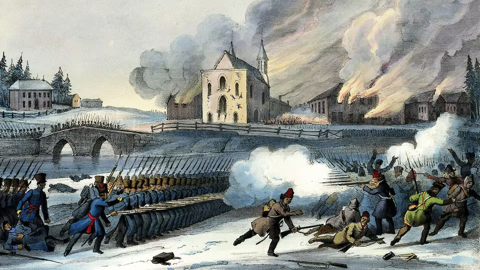
Durant son enquête, Lord Durham découvrira petit à petit les problèmes économique et politique du Bas-Canada qui auront causé la rébellion. Il fera un rapport avec ses recommandations pour régler ces problèmes et éviter d’autres confrontation armées. Selon lui, le problème majeur serait la constitution. En effet, dans le modèle actuel, les Canadiens français ont trop peu de pouvoir, alors que le gouverneur britannique (qui n’a aucun sentiment d’appartenance) en a beaucoup trop. Ce qui peut créer des situations de corruption et aussi rendre mécontents les Québécois qui voient leur pouvoir brimé. Sauf que d’un autre côté, accorder la responsabilité ministérielle au Bas-Canada empêcherait toute assimilation de la population. C’est donc pour ça que Durham proposera d’unir le Haut et le Bas-Canada et de leur donner l’autonomie politique. Cela devrait régler les problèmes, et les Canadiens français ne devraient pas avoir trop de pouvoir, car ils seront en minorité. Le gouvernement britannique décidera d’écouter Durham et mettra en place l'Acte d'Unionl’Acte d’union, une nouvelle constitution qui unifiera politiquement les 2 Canada. Malgré ça, la reine décidera de ne pas accorder la responsabilité ministérielle, ce qui poussera les Canadiens anglais et français à s’unir politiquement afin de militer. Cette alliance improbable unira les réformistes de La Fontaine et ceux de Baldwin, et ce sera 10 ans après la fin des rébellions (1848) que le gouvernement responsable sera accordé au Canada-Uni, ce qui marquera un nouveau chapitre dans l’histoire du Canada. Le plan d’assimilation de Durham sera un échec et on peut même affirmer que fusionner les chambres d’assemblées aura été une mauvaise idée d’assimilation.(Portrait de : Durham, La Fontaine et Baldwin)
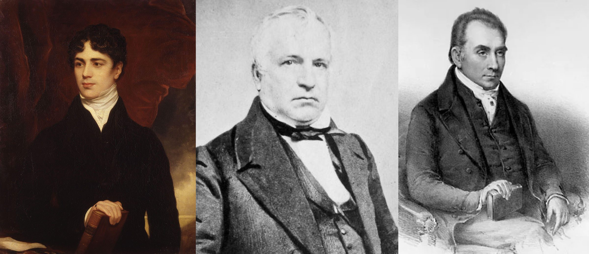
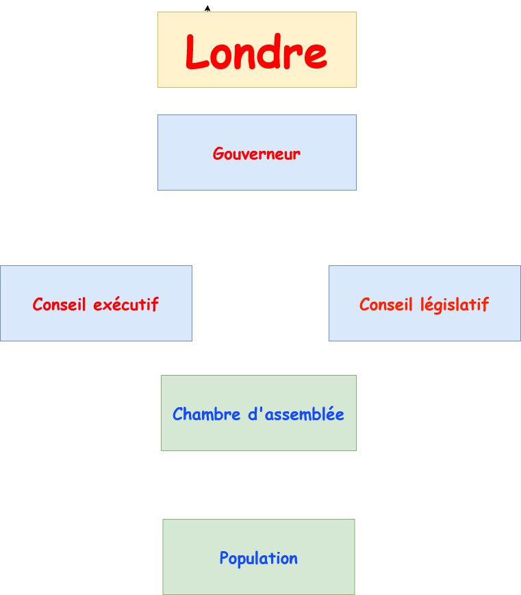
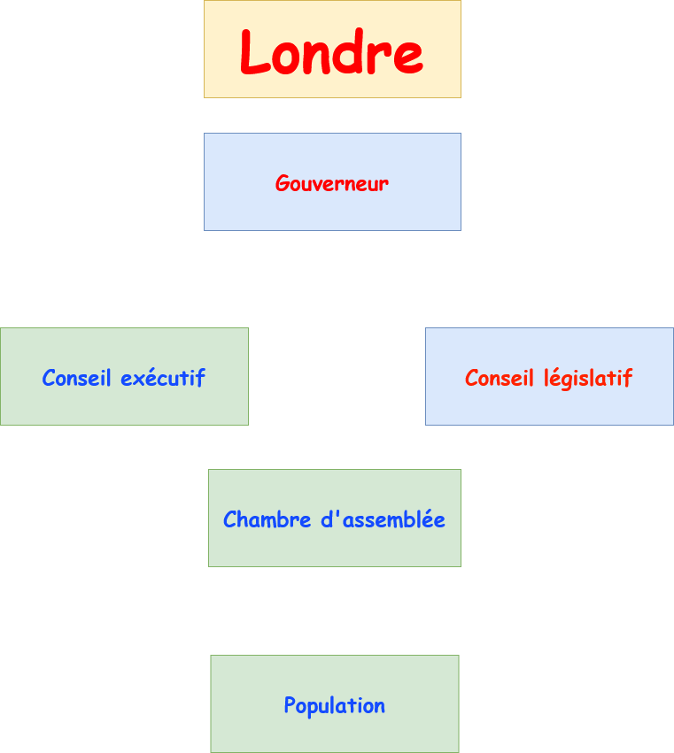
AANB
Après le rapport Durham, plusieurs problèmes économiques et politiques remettront en doute l’actuelle constitution. C’est dans le but de régler ses problèmes que des politiciens formeront la grande coalition. Leur objectif principal sera de régler l’instabilité ministérielle de la province, mais ils chercheront aussi à être plus autonomes face à la Grande-Bretagne. Pour ce faire, ils essayeront d’inviter d’autres colonies britanniques afin de former un dominion. Ils promettront plusieurs avantages, comme un chemin de fer transcontinental ou encore une armée pour les protéger. Seules les îles déclineront l’offre, car le chemin de fer ne pourra les atteindre ; l’Ontario, le Québec, le Nouveau-Brunswick et la Nouvelle-Écosse formeront donc le Dominion du Canada et, au fil des ans, d’autres provinces rejoindront l’amalgame (la dernière sera le Nunavut en 1999). (Photo de John A. MacDonald, premier premier ministre du Canada et membre important de la grande coalition)
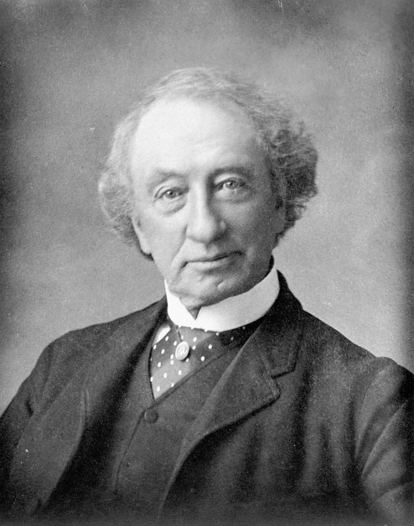
L'industrialisation
Vers 1850, le Canada se lancera dans le monde de l’industrialisation sans savoir que cela changera son histoire radicalement. Comme tous les pays industrialisés à cette époque, ça sera une catastrophe : le manque de lois, les embaucheurs peu scrupuleux ou encore le fait que la main-d’œuvre n’est pas protégée rendra cette époque terrible, surtout pour les classes ouvrières qui, en plus, ne gagnent presque rien du tout. C’est aussi durant cette époque que le chemin de fer se développera, ce qui favorisera la croissance économique du pays. C’est aussi à cette époque que des canaux apparaitront partout dans la région, comme le canal Lachine. Ceux-ci faciliteront encore plus le transport entre les villes.(Image d'ouvrier dans le textile)
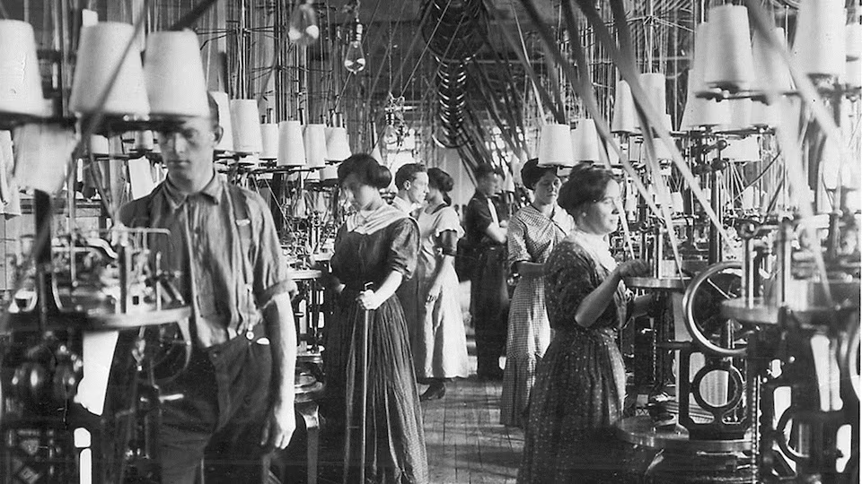
La première guerre mondiale
En 1914, une guerre d’envergure mondiale débutera en Europe, le Canada étant une colonie britannique, elle sera donc obligé de participer à cette guerre. Le pays entrera en guerre en aout 1914 au même moment que la Grande-Bretagne, et peu de temps après, ils adopteront les mesures de guerre, ce qui conférera plus de pouvoir au gouvernement. Celui-ci demandera aussi beaucoup d’argent (via les obligations de la victoire) afin de financer la formation des soldats, l’armement, etc. En parlant des soldats, certains rejoindront l’armée britannique (CEC) et participeront à des batailles décisives comme celle d’Ypres ; d’autres soldats,eux, resteront au Canada. Les Québécois, eux, ne voudront pas participer à la guerre, car ils ne verront pas l’intérêt d’aider les pays en guerre; la partie anglophone du Canada, qui est extrêmement loyale à la couronne, critiquera ce manque d’engagement de la part du Québec et cela divisera encore une fois les francophones des anglophones. La fin de la guerre sera chaotique. Après l’adoption de la conscription obligatoire en 1917, beaucoup de Québécois iront protester en faisant des émeutes. La dette publique explosera et les alliés seront dans une mauvaise posture. Heureusement, en 1917, les ÉU entreront en guerre, ce qui retournera la situation, et la guerre se terminera en 1918 avec le traité de Versailles. Après la guerre, les femmes obtiendront le droit de vote un peu partout dans le pays, sauf au Québec à cause de l’église, et les tensions entre Français et Anglais seront importantes. Mais le Canada n’aura pas vraiment de « récompense » à la hauteur de l’implication du pays lors de la guerre. (Pohot : soldat lors d'un exercice avec les masques à gaz)

Les années folles et la grande dépression
Pour fêter la fin de la guerre au Québec et partout dans le monde, les gens décideront de profiter de leur vie. On appelle cette période les années folles. Plusieurs services publics et infrastructures seront mis en place par le gouvernement et les villes afin d’améliorer le mode de vie des populations ouvrières qui ont vécu dans la misère pendant la révolution industrielle. L’économie nord-américaine se développera énormément durant ces années et prendra même de la place dans l’économie internationale, car il s’agira d’une zone qui n’aura pas été touchée par la guerre. De nouvelles inventions telles que la télé et la radio favoriseront aussi le développement de la culture québécoise et feront découvrir d’autres cultures aux Québécois, comme la culture américaine avec le cinéma. Ce sera justement ça le problème de cette époque : les usines produiront trop en pensant que la population achètera, mais ça ne sera pas le cas. Les entreprises perdront beaucoup de revenus et licencieront donc plusieurs employés. La valeur des entreprises baissera, ce qui poussera les investisseurs à revendre leurs actions que,malheureusement, personne ne rachètera. La cause de la Grande Dépression : le krach boursier. Cette période sera une sorte de cycle. Il n’y aura pas de programme pour aider les chômeurs autres que la charité de la population, des manifestations auront lieu partout, mais malgré l’intervention du gouvernement, la Grande Dépression continuera de faire des ravages. Seule la guerre pourra arrêter cette période qui traumatisera plusieurs milliers de Québécois.
La seconde guerre mondiale
Après le traumatisme qu’aura été la Première Guerre mondiale, les Canadiens n’auront pas vraiment envie de participer à une autre guerre de ce genre. Pour la première fois dans l’histoire du Canada, les Canadiens français ET anglais seront contre la conscription obligatoire. Malheureusement, avec la suite des évènements et l’invasion de la Pologne, le Canada ne pourra pas rester neutre pendant très longtemps. Il ne faudra attendre qu’une semaine pour que le Canada déclare la guerre à l’Allemagne. L’entrée en guerre du Canada relancera l’économie du pays, ce qui mettra fin à la Grande Dépression; les usines seront utilisées pour produire des armes et autre équipement de guerre afin de soutenir les Alliés. Comme la Première Guerre mondiale, le gouvernement rationnera la nourriture, les mesures de guerre seront adoptées et les femmes prendront la place des hommes dans les usines. Le premier ministre canadien de l’époque, Mackenzie King, promettra à toute la population de ne pas mettre en place la conscription obligatoire, mais, en voyant la tournure que prend la guerre, il décidera d’organiser des votes partout au Canada afin de voir s’il pourrait revenir sur sa décision et, vu la tournure de la guerre, le oui gagnera. Le gouvernement canadien mettra donc en place la conscription obligatoire en 1940, ce qui, encore une fois, ne fera pas l’affaire des Québécois. Le Canada construira des bateaux, des avions, des bombes, des armes ; les soldats participeront à des batailles majeures comme le débarquement de Normandie, on peut affirmer que le Canada sera d’une grande aide durant la guerre. Malgré ça, comme la première guerre mondiale, ils ne gagneront pas de territoire et ne signeront même pas de traité de paix avec l’Allemagne. Cependant, ce sera pendant la guerre (1940) que les femmes obtiendront enfin le droit de vote au Québec. (Image : débarquement de normandie)
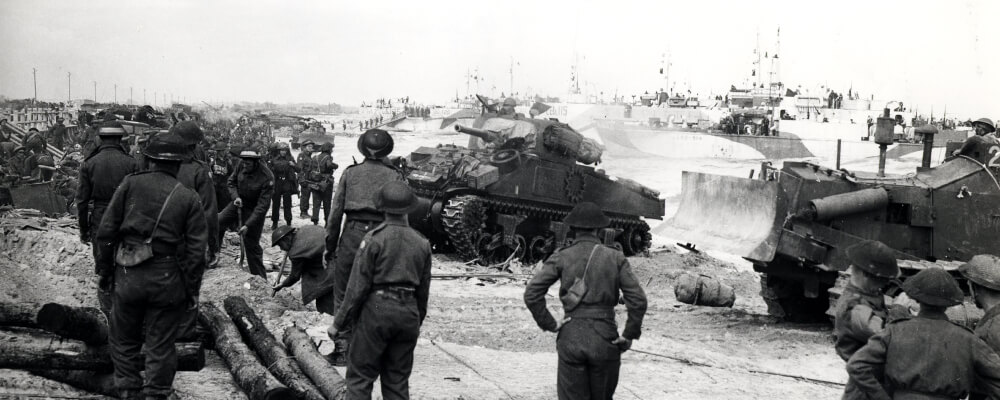
La grande noirceure
Peu de temps avant la fin de la Seconde Guerre mondiale, Maurice Duplessis deviendra le premier ministre du Québec (1944-1959). La période de son mandat sera nommée « la grande noirceur », même si cette métaphore est très exagérée. Cette période ne sera pas la meilleure pour le Québec. Maurice Duplessis est un homme très conservateur et contre les idées libérales ; il donnera la charge de l’éducation et de la santé à l’Église et il encouragera énormément le libéralisme économique. Ces politiques présenteront beaucoup de problèmes, la population sera sous-éduquée comparée aux populations anglophones, les ressources naturelles seront exploitées par des entreprises américaines au détriment des entreprises québécoises et surtout, le Québec aura une évolution lente. La grande Noirceur sera une courte période dans l’histoire du Québec, car Maurice Duplessis décèdera en 1959. (Image Maurice Duplessis)
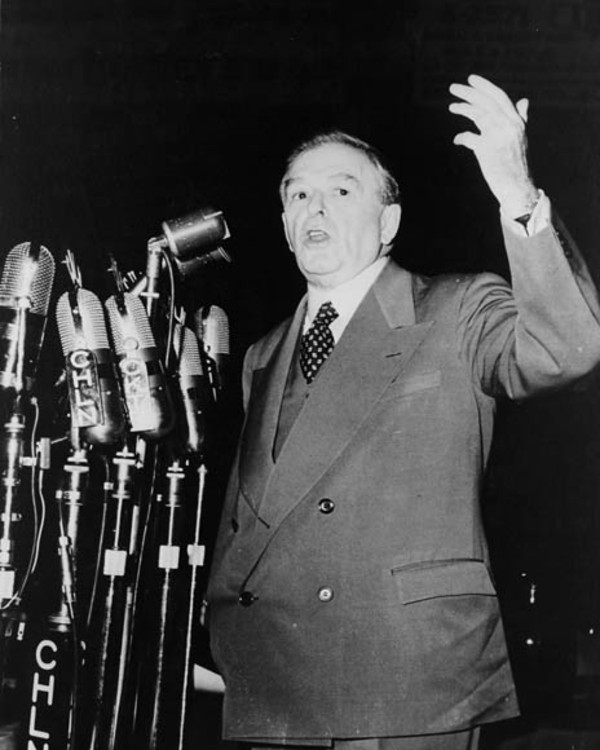
La révolution tranquille
Après le gouvernement Duplessis, un parti avec une idéologie totalement opposée à celui-ci prendra le pouvoir, il s’agit du Parti libéral dirigé par Jean Lesage. La période de son mandat (et au-delà) se nommera la Révolution tranquille,car, à cette époque, plusieurs réformes seront menées par ce gouvernement afin d’améliorer les conditions de vie au Québec. D’importants changements au niveau de la santé et de l’éducation auront lieu: la création d’hôpitaux publics et la mise en place de plusieurs ministère comme celui de l’Éducation permettront d’éduquer la population du Québec en plus d’offrir des soins plus facilement. Cette époque marquera aussi le début de la laïcisation de la province malgré l’opposition de l’Église. Le gouvernement Lesage mettra aussi en place l'État-providence, ce qui permettra le développement économique, mais aussi de mettre en place plusieurs politiques afin d’aider les Québécois les plus démunis. Cette époque marquera aussi une forte croissance de l’identité nationale. C’est à cette époque que les francophones se désigneront comme Québécois et non comme Canadiens français. (Portrait de Jean Lesage)
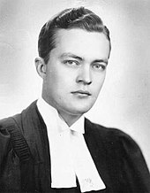
Maîtres chez nous
En 1962, le ministre des Richesses naturelles René Lévesque proposera de nationaliser les compagnies d’électricité de la province. À cette époque la majorité étaient privé et n’arrivaient pas à fournir de l’électricité convenablement à toute la province. Régler ce problème serait très favorable au développement de l’économie. C’est grâce à ce projet que les libéraux gagneront les élections de 1962 et lorsqu’ils auront nationalisé toutes les entreprises en 1963, Hydro-Québec deviendra l’entreprise d’état la plus importante du Canada à cette époque. (Pohot de René Levesque)
La crise d'Octobre
Vers les années 70, des membres du Front de libération du Québec kidnapperont 2 hommes politiques; leur objectif sera de lutter contre l’influence anglophone du Québec. Cette crise sera la première fois (et dernière à ce jour) ou le gouvernement fédéral mettra en place les mesures de guerre en période de paix, ce qui rend cet évènement hors du commun. La conclusion de cette crise : Pierre Laporte, ministre de l’Immigration, sera assassiné par le FLQ et James Cross lui sera sain et sauf. (Image de Pierre Laporte)
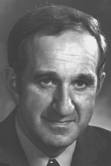
Crise d'Oka et relation avec les Autochtones
Pendant plusieurs années, les Autochtones seront maltraités au Québec, leur terre sera volée, les enfants enlevés et assimilés dans les pensionnats (le dernier fermera en 1991) et leurs droits totalement brimés. Malgré la tentative du gouvernement d’améliorer leur relation avec ces peuples en leur redonnant leur terre, etc. Un évènement majeur aura lieu en 1990 entre les populations autochtones et le gouvernement. Cette histoire commencera quand un terrain de golf sera aménagé sur un cimetière Mohawk, malgré leur protestation. Le projet commencera en 90, ce qui lancera le début de la crise d’Oka. Les Autochtones mettront en place des barrages afin d’empêcher la circulation, certains Autochtones iront même jusqu’à s’armer afin de rivaliser avec l’armée canadienne qui sera sur les lieux afin de calmer la situation. Cette crise fera un mort, plusieurs Autochtones seront arrêtés, mais pas en vain, car le gouvernement décidera d’enfin écouter certaines de leurs revendications. Cette crise jouera aussi un rôle important dans la création de la Commission royale sur les peuples autochtones, une commission qui aura pour but d’améliorer les relations avec les Autochtones et aussi de régler pour de bon tous les problèmes afin d’éviter que d’autres crises similaires se produisent.
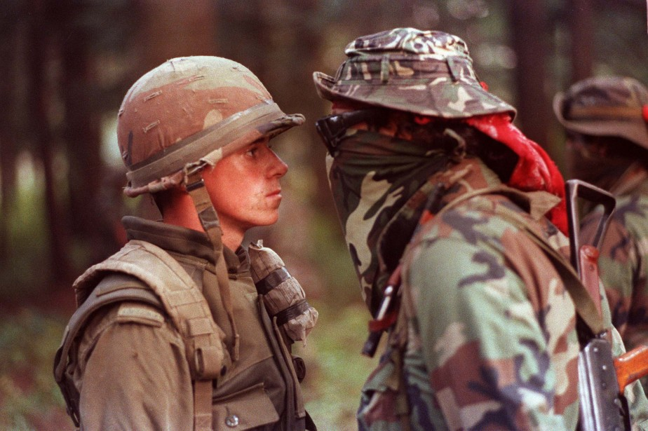
Conclusion
Après la Révolution tranquille, le Québec continuera son évolution économique et sociale. Deux référendums auront lieu en 92 et en 95 pour savoir si le Québec devrait devenir un pays à part entière, et le OUI du référendum de 95 était à 1% de gagner. Beaucoup d’évènements détérioreront les relations entre le Québec et le reste du Canada, comme le fait que le rapatriement de la constitution se fasse sans l’accord du Québec. Au fil des ans et malgré les différentes complications, la population francophone catholique d'Amérique du Nord arrivera à garder sa culture et sa langue française. Les premiers arrivants seront des colons français qui, au fil des générations, se sentiront chez eux en Nouvelle-France. Après l’abandon du territoire par la France, les Canadiens français seront livrés à eux-mêmes dans un territoire devenu à 100% anglais. Malgré ça, ils se battront pour leurs droits et des figures importantes comme Louis-Joseph Papineau permettront aux Français (et aux Anglais) d’obtenir l’autonomie gouvernementale, ce qui leur permettra de diriger leur territoire en fonction de leur culture. Plusieurs fois pendant l’histoire, des choix pris par le gouvernement fédéral, comme la conscription obligatoire, ne feront pas l’affaire du Québec et cela divisera beaucoup les deux populations du Canada. Lors de la Révolution tranquille, un sentiment d’appartenance au Québec naît . C’est à ce moment que les Canadiens français se considéreront comme Québécois et cela marquera un nouveau chapitre dans leur histoire .